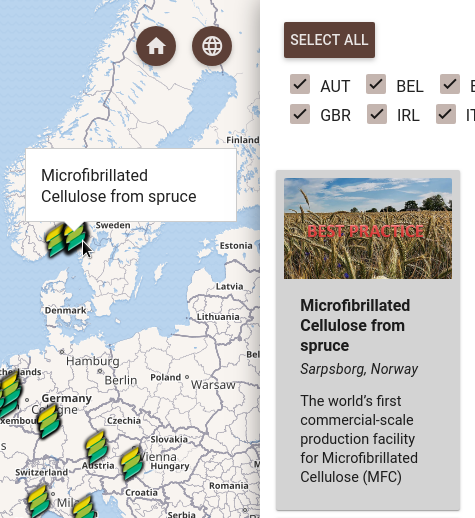
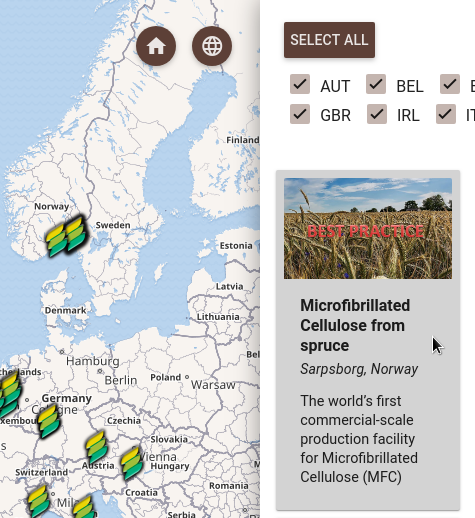
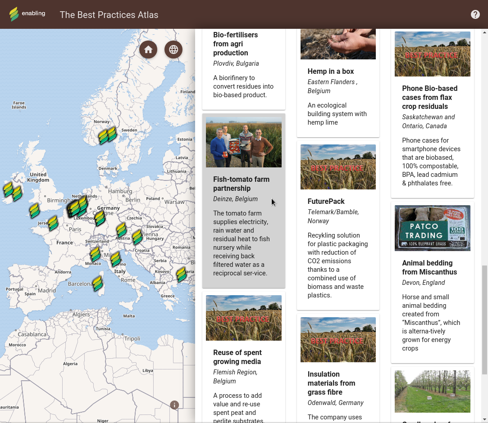
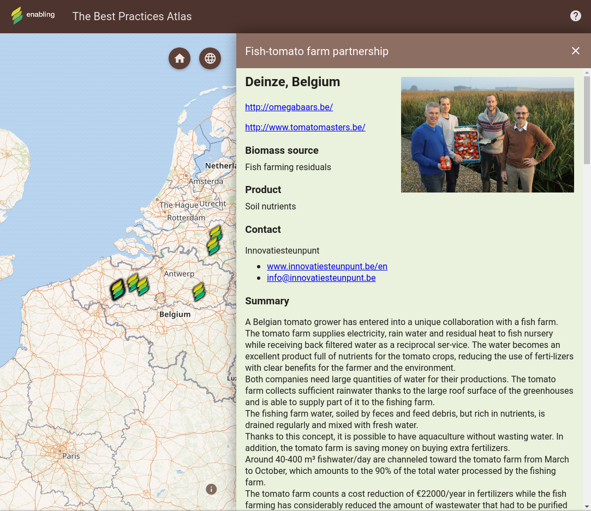
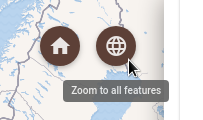

Use your mouse to select and deselect which countries you want the best practices displayed in. You can also select and unselect all countries with the corresponding button.
When you hover your mouse over a point in the map, the points name is displayed and highlighted both in the map and in the best practices list.
The same applies to the best practices list – hover over a best practice entry in the list and the corresponding point will be highlighted in the map. The name of the point will not be displayed in the map in this case.
When you click on a best practice in the map or the list, the map will center on the point and the best practice details will be displayed.
You can then close the detail with the "X" button in the upper right corner and the map will view will move to the previous position.
You can also change the map view using the "Default" and "Zoom to all features" buttons to change the map view to the initial extent and to quickly see all displayed features.
